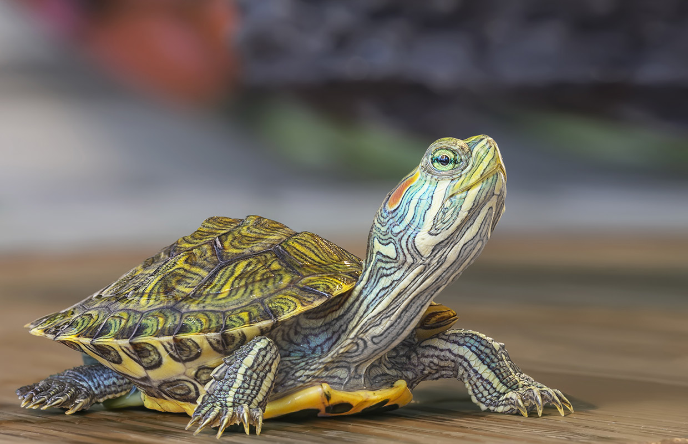
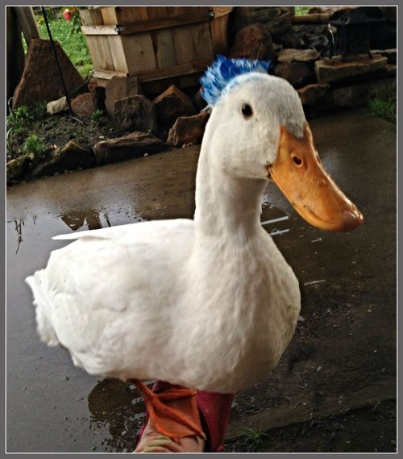
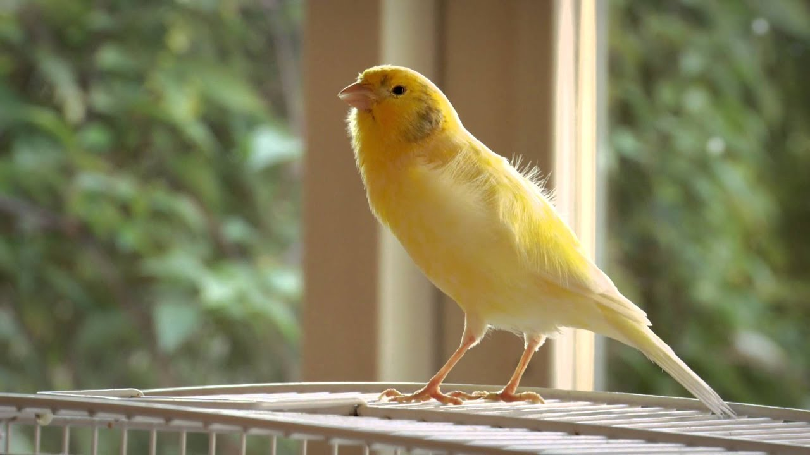

Lika (German Shepherd)

Lika is a very active highly intelligent dog. She's only 5 months old and is still working towards becoming house trained! She needs a loving patient home willing to train and provide lots of attention so she doesn't get into trouble. Good with kids!
Ferdinand (Box Turtle)
Ferdinand was found in our own back yard! He loves the water. You'll find him swimming every change he gets. His favorite snacks are butter lettuce and radishes. Must show proof of turtle tank for adoption.
Quackmeyer (Duck)
Quackmeyer or Dr. Quackmeyer, as he prefers, is a mellow fellow. He likes long walks at sunset and is looking for a forever home. Dr. Quackmeyer is 8 years old. He needs a loving low energy home willing to accomodate his slower late-in-life pace.
Gerry the (Canary)
Gerry the Canary is our most social pet right now! He was emancipated from the Pennsylvania coal mines just last year and hasn't stopped singing since. You can read more about his story here! Gerry needs a home that celebrates his history and his struggle.